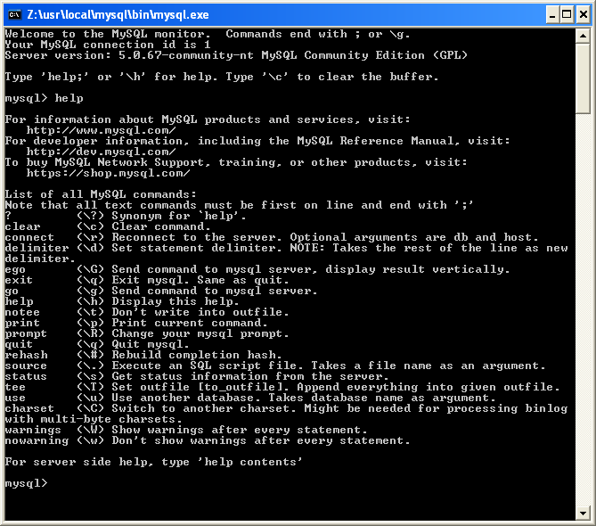

|  |
Základnı príkaz bude pre nás help ktorım sa dozvieme, aké príkazy mô�me zo vstupného riadku zada�. Takto sa napr. dozvieme, �e ukonèi� prácu s príkazovım interpretrom mo�no zadaním príkazu exit èím sa pod Unixom dostaneme naspä� do shellu, v miniserveri sa nám okno mysql zavrie. Príkazy, ktoré budeme pou�íva� mo�no rozdeli� na príkazy jazyka SQL, tieto interpreter samozrejme interpretuje a vy�adujú ako ukonèenie bodkoèiarku a príkazy na administráciu práce s databázami, ktoré bodkoèiarku nevy�adujú (ale mô�e by�). |
| Základné typy | Modifikátor | |||||||||||||||||||||||||||||||||||||||||||||||||||||||||||||||||
|---|---|---|---|---|---|---|---|---|---|---|---|---|---|---|---|---|---|---|---|---|---|---|---|---|---|---|---|---|---|---|---|---|---|---|---|---|---|---|---|---|---|---|---|---|---|---|---|---|---|---|---|---|---|---|---|---|---|---|---|---|---|---|---|---|---|---|
|
|
| '%retazec' | Vráti všetky ståpce konèiace sa zadanım re�azcom |
| 'retazec%' | Vráti všetky ståpce zaèínajúce sa zadanım re�azcom |
| '%retazec%' | Vráti všetky ståpce, v ktorıch sa kdeko¾vek vyskytuje zadanı re�azec |
| '_retazec' | Vráti všetky ståpce s jednım ¾ubovo¾nım znakom pred zadanım re�azcom |
| 'retazec_' | Vráti všetky ståpce s jednım ¾ubovo¾nım znakom za zadanım re�azcom |
| '_retazec_' | Vráti všetky ståpce s jednım ¾ubovo¾nım znakom pred a za zadanım re�azcom |
| '_____' | Vráti všetky ståpce s ¾ubovo¾nımi 5 znakmi zadaného ståpca |